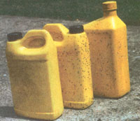

Country Lore
I'm an American wildlife biologist working in the country of Surinam, South America. Sea turtle conservation is an important part of my work here. As such, I spend a good amount of time on remote nesting beaches, where I often meet fishermen. Through them, I became acquainted with an interesting use of Styrofoam that I want to pass on to you and your readers.
The fishermen collect all kinds of chunks of Styrofoam they find on the beach and make it into a substitute for two-component epoxy to repair their canoes. It works great, and here is how to do it.
Crumble the Styrofoam into dice-size or peanut-size pieces, drop them a few at a time into a container holding a small quantity of gasoline, and watch them dissolve, stirring occasionally. You need very little gasoline, but a lot of Styrofoam. You will have to experiment with it. Start with maybe a one-sixteenth inch layer of gasoline in a tuna-can sized container. You will be amazed how much Styrofoam you are going to need before the mixture starts to thicken. When it is about the consistency of what you would normally get when mixing two-component epoxy, the mixture is ready for use.
Use it like you would epoxy. It will harden in a couple of hours, and you can work it like wood or metal. You can also melt the Styrofoam in paint thinner, but then it may take 24 to 48 hours to harden; this may be useful for some applications. At any rate, the fishermen in Surinam use it to repair their boats: fill seams, close cracks, repair holes, you name it.
-Anonymous
Paramaribo, Surinam
Here is a low-cost trap for whiteflies that enjoy my tomato plants indoors and outside. To make it, clean bright yellow bottles then fill them with water or sand to prevent tipping by wind. Cover them with auto grease or petroleum jelly and then smear on oil.
-Paul W. CoverÂ
Hilliard, OH
You can recycle an empty, clean, two-liter plastic pop bottle into a transparent bird restaurant. Here's how.
Step One: Cut away about one-third of the neck where the cap threads are. Don't cut beyond the heavy plastic at the end of the threads. Your cut-away will be about 1/4, inch deep by 1/3 to 1/2 inch long. This allows even sunflower seeds to slide through into the feed tray.
Step Two: Cut the bottom off a small Cool Whip-sized container so it makes a dish about an inch deep. This will make the feed tray.
Step Three: Using the tip of a knife or a small drill bit, make two holes across from each other just large enough for the wire, about three inches up the bottle neck. Make two more holes across from each other in the small container bottom about 2 1/2 to 3 inches apart.
Step Four: Pass the wire first through the holes in the bottle so equal lengths stick out on both sides. Bend these ends down to run through the two holes in the feeder tray. Slide the feeder tray up tight against the bottle neck and twist the wire ends together firmly to secure it in place. Trim any excess wire. This end of the feeder is complete.
Step Five: At the other end of the bottle, cut off about three inches evenly. This will be the cover of the feeder. Set this aside for now.
Step Six: Make two slits about a half inch deep and across from each other in the open end of the plastic bottle. This will allow the cover to slide tightly over the open end so rain doesn't get at the feed.
A few tips from our readers in Latin America.
Step Seven: Use the knife tip or small drill bit to make two holes across from each other, three inches down from the open end. Pass the second piece of wire through these holes and leave just enough room to allow you to put on and take off the cover before twisting it together to form a handle-type hanger.
Step Eight: Flip the hanger to the side, fill the feeder with bird feed, and choose a place to hang it where you can watch the birds while they eat.
-Beverly Kleikamp
Powers, MI
I live in the southernmost province of Costa Rica. It is quite hot here all of the time. My home has cement block walls one meter high with nothing from there up to the ceiling but security bars spaced about five inches apart horizontally-no glass.
I recently built a twelve foot long work bench against one of the walls that face my gardens. I needed a place to hang tools but wanted to retain the window. Therefore no pegboard. I solved the problem by wiring half-inch screening to the bars. I make hangers from wire. I have a flexible hanging system, the view of my beautiful gardens, and unrestricted ventilation.
I needed to put up ten cup hooks but had left my awl on the job. So I cut the head off of a twenty penny nail (4") and, leaving it in the vice, bent it over three-quarters of an inch with a hammer. I then split a three and one half inch length of closet pole, drilled one half of it the appropriate size for the nail and chiseled out a channel to fit the short foot of the L-shaped nail. I taped the two halves of the cylinder back together and now have an awl that actually fits my hand better than the store-bought one. I guess mine cost around two cents.
-George H. Presser
Golfite, Costa Rica
With planting season here and summer's heat in prospect, the last thing on your mind is the faithful wood-burning plant that's kept you warm all winter. And the most forgettable component of the heating system is the flue: the chimney that created the draft that pulled air through the fire while exhausting the smoke.
Its condition at the end of a winter's use can tell you a lot about your woodburning habits and about your plant-good information to have if you still have an older airtight stove and plan to have the chimney serviced by a heating contractor or professional chimney sweep. The best-equipped sweeps now have little video cameras they can lower into your chimney to inspect its inner secrets. But, most also sell expensive new-model stoves, and build or reline chimneys. Their high tech cure for your flue's symptoms could cost several thousand dollars when all you really need do is to seal up a few leaks or update your wood-burning routine.
Locate a hand mirror, a flashlight, some grease or a remnant of bar soap, a narrow ash shovel or garden trowel, and a bucket. Take the tools to your flue's cleanout. In a modern brick or concrete block chimney this is a small cast-iron door mortared into the chimney's base. Open it carefully; if hinges are rusted or the door is too gummed-up to open easily, soak all around with penetrating oil. Then, pry open gently; if the thin, brittle iron door cracks, the whole door/frame unit will have to be broken out and a new one mortared in.
Grease or soap the hinges and edges of the door before you close it again for easy opening in the future. Be sure it closes tight and latches firmly; if it won't, bank loose sand up around it. Any significant air leak in the cleanout closure will rob your stove of draft.
If this is the flue's first cleaning, the floor of the chimney will most probably contain a pile of loose mortar plus chunks of brick, block, or fireclay liner fallen during construction. If the flue bottom otherwise contains nothing but fine, dry soot, you're running your stove right: with hot, well-oxygenated fires that burn wood completely and emit none of the compar atively cold, wet, sour smelling smoke that will condense inside the flue and dry into creosote that can ignite to produce a flue fire that can burn your house down.
If you find a significant build-up of residue behind the cleanout door, examine it carefully. Small sticks and mud indicate that chimney swifts have built their flammable nests in the flue during spring seasons past. I've found the dried carcasses of young birds as well as bats, raccoons, and opossums in my own old flues. Wildlife doesn't belong there. Claws can loosen mortar; then, water can get in and expand in freezing weather, breaking joints. Plus, mud and droppings will adhere to the inner surface, impeding smoke. Plan to close the flue with a flat rock or a piece of hardware cloth held on with bricks.
A small accumulation of thin, dry flakes of black, grainy-surfaced creosote emitting little odor is the best sort of creosote to have if you must have any at all. Chances are that you'll find a little more like it up at downwind edge of the chimney mouth. An annual brushing will remove it before a serious hazard develops.
However, if you find a large quantity of wavy, greasy-feeling brown flakes-often containing "cheeseholes"-and with a rank odor, you are producing too much cold smoke or have air leaks in your system. Plan to test for leaks by starting a small, smoky paper fire in the stove, and close the damper or have a helper on the roof cap the flue briefly. Seal leaks in stove or pipe revealed by little puffs of smoke.
Now, put the mirror into the cleanout opening and adjust it so you can see up the flue. The opening should be perfectly clear to the sky. If you see wavy sheets peeling off the chimney's inner surface you have a major creosote problem. Determine to burn your fires hotter using well-dried wood, and clean the flue-as a minimum-after burning each cord of wood.
Post-1940s modern flues are lined from smoke inlet to the cap on top with a smooth ceramic liner. It must be in sound condition to satisfy fire and building codes. Using a cracked liner may invalidate you fire insurance policy-or worse, give you tragic reason to file a claim.
If the liner is seriously compromised, you will find small flakes of red fireclay in the cleanout residue. The flakes are thin, fine-grained, and flinty-hard with sharp, brittle edges. If left from construction, they'll be at flue bottom, red-clay pink all over, possibly stained brown. If from fresh cracks, flakes will be high in the residue pile, sooty black on one side, and pink on the other. Time to call in a pro. External problems show up first at the flue's top. Creosote is acidic and combines with acid rain to degrade alkaline mortar in the flue's cap and joints. Brown streaks at the flue's top and sides are rain-washed creosote that has typically trickled down through a fractured flue cap. If you are ladder-qualified, you can patch or replace the cap easily with a bucket of mortar premix and a flat trowel. If mortar is loose between a few bricks, it can be removed and replaced using a brick mason's pointing tool. If the cap is so bad that more than a few top course bricks are loose enough to come out, the flue-top need rebuilding. Another job best left to the pros.
Send your tips c/o MOTHER EARTH News, PO. Box 129, Arden, NC. 28704, or e-mail us at MEarthNews@aol.com . Please include your phone number and a photo.
|
 Paul W. Cover's low-cost whitefly trap |
ILLUSTRATIONS: KENNETH LIN |
|